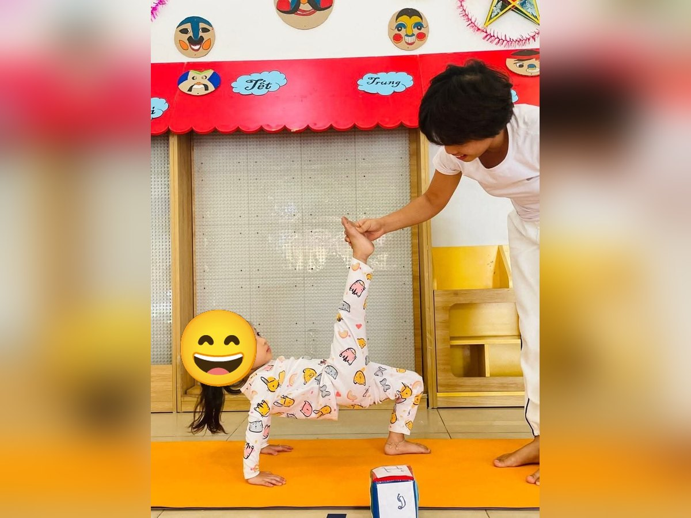

Chủ đề 1 · Bé vui đến trường
Gà Con Bông lần đầu đến trường
🌟 Bài học trong câu chuyện
Giới luật yoga: Ahimsa – Yêu thương, không làm đau ai. Bé nhẹ nhàng với bản thân, với bạn bè, con vật và cây cỏ.
Kỹ năng sống: Làm quen bạn mới, chào hỏi lễ phép.
1. Khởi động (2 phút)
Cả lớp ngồi xếp bằng thành vòng tròn. Cùng thở 3 hơi thở bông hoa: hít vào bằng mũi như ngửi hoa, thở ra bằng miệng thật chậm. Chắp tay trước ngực và chào nhau: “Namaste, chào các bạn!”
2. Câu chuyện: Gà Con Bông lần đầu đến trường (đọc cho bé nghe, 4 phút)
Cô đọc trọn câu chuyện cho bé nghe trước. Sau đó cô kể lại từng đoạn ngắn và cả lớp cùng tập 10 tư thế ở phần bên dưới.
Sáng nay là ngày đầu tiên Gà Con Bông đi học. Ông mặt trời vừa ló lên sau rặng tre, vươn những tia nắng vàng thật dài như đang vươn vai chào Bông. Mẹ Gà đeo cho Bông chiếc cặp sách nhỏ màu đỏ. Bông đứng thật thẳng trước gương và tự nhủ: "Mình là bạn nhỏ dũng cảm!"
Hai mẹ con bước từng bước dài trên con đường làng đến trường. Nhưng đến cổng trường, nghe tiếng các bạn ồn ào, Bông bỗng thấy sợ. Bông ngồi thu mình lại một góc, hai cánh ôm chặt lấy người. Mẹ ngồi xuống bên Bông, nói nhỏ: "Con thở thật chậm nào, hít vào... thở ra...". Bông thở ba hơi thật chậm và thấy lòng nhẹ hơn.
Cô giáo Vịt ra đón Bông, tặng Bông một cây bút chì dài, nhọn hoắt. Vào lớp, cô mở một quyển truyện tranh thật to và đọc: "Ngày xửa ngày xưa...". Bông nghe say mê, quên cả sợ.
Giờ ra chơi, Bông thấy bạn Vịt Con đứng một mình bên cầu trượt, mắt buồn buồn. Bông nhớ lời mẹ dặn: "Hãy đối xử dịu dàng với mọi người". Bông chạy lại hỏi: "Bạn tên gì? Mình chơi cùng nhé!". Hai bạn cùng trượt cầu trượt, cười khanh khách.
Vào lớp, các bạn chen nhau giành ghế. Bông không xô đẩy ai, Bông đợi bạn ngồi xong rồi mới ngồi, lưng thẳng, chân vững như cái ghế. Cuối giờ, Bông và Vịt Con nắm tay nhau, đứng cạnh nhau như hai cái cây nhỏ.
Chiều về, Bông cúi chào cô thật ngoan rồi sà vào lòng mẹ: "Mẹ ơi, đi học vui lắm, con có bạn mới rồi. Mai con lại đi học nhé!"
3. Kể lại và tập 10 tư thế (6 phút)
-
 1
1Mặt trời buổi sáng
🧘 Tư thế Chào mặt trời (Sun Salutation)
Lời kể khi tập: Ông mặt trời thức dậy, vươn tay thật cao chào Bông. Cả lớp cùng chào: "Chào ông mặt trời!"
Cách làm: Đứng thẳng, hít vào vươn hai tay lên cao chào mặt trời, thở ra cúi gập người, hai tay chạm chân hoặc chống lên viên gạch như trong ảnh, rồi hít vào từ từ đứng lên. Giữ 3 đến 5 nhịp thở.
-
 2
2Cặp sách trên lưng
🧘 Tư thế Đứng thẳng (Mountain)
Lời kể khi tập: Bông đeo cặp lên lưng, đứng thật thẳng, thật vững. "Con là bạn nhỏ dũng cảm!"
Cách làm: Đứng thẳng, hai bàn chân sát nhau, tay xuôi hai bên, vai thả lỏng, mắt nhìn thẳng. Giữ 3 đến 5 nhịp thở.
-
 3
3Bé đi bộ đến trường
🧘 Tư thế Chiến binh 1 (Warrior 1)
Lời kể khi tập: Bông bước từng bước dài trên con đường đến trường. Mình cùng bước nào: một, hai, một, hai!
Cách làm: Một chân bước dài ra trước, gối trước hơi gập, chân sau thẳng, hai tay vươn lên cao. Giữ 3 đến 5 nhịp thở.
-
 4
4Chú gà con
🧘 Tư thế Gà con vỗ cánh (Chicken Wings)
Lời kể khi tập: Đến cổng trường, Bông hơi sợ. Mẹ nói: "Con thở thật chậm nhé". Bông ngồi xuống, vỗ cánh nhẹ cho bình tĩnh: "Chiếp chiếp!"
Cách làm: Ngồi xếp bằng, hai bàn tay đặt lên vai, khuỷu tay vỗ lên xuống như cánh gà. Giữ 3 đến 5 nhịp thở.
-
 5
5Cây bút chì
🧘 Tư thế Ngọn nến (Kneeling Candle)
Lời kể khi tập: Cô giáo tặng Bông một cây bút chì thật dài. Mình quỳ ngồi, chắp tay vươn thật cao như cây bút chì.
Cách làm: Quỳ ngồi trên gót chân, lưng thẳng, hai tay chắp lại giơ cao qua đầu. Giữ 3 đến 5 nhịp thở.
-
 6
6Quyển sách mở
🧘 Tư thế Gập người ngồi (Seated Forward Fold)
Lời kể khi tập: Cô mở quyển truyện tranh. Mình ngồi xuống, cúi người như mở trang sách, đọc thầm: "Ngày xửa ngày xưa..."
Cách làm: Ngồi duỗi thẳng hai chân, hít vào vươn tay lên, thở ra cúi người về trước, tay với về phía ngón chân. Giữ 3 đến 5 nhịp thở.
-

7Cầu trượt
🧘 Tư thế Cầu trượt nhấc chân (Reverse Table Leg Lift)
Lời kể khi tập: Giờ ra chơi, Bông thấy một bạn đứng một mình bên cầu trượt. Bông làm cầu trượt thật vững cho bạn trượt cùng.
Cách làm: Ngồi, hai tay chống phía sau, bàn chân đặt trên sàn, nâng hông lên phẳng như mặt cầu trượt, rồi nhấc một chân duỗi thẳng lên cao (cô có thể đỡ chân). Đổi chân. Giữ 3 đến 5 nhịp thở.
-
 8
8Cái ghế ngồi học
🧘 Tư thế Cái ghế (Chair)
Lời kể khi tập: Vào lớp, Bông ngồi ngay ngắn trên ghế, không xô đẩy bạn. Mình giữ ghế thật vững, đếm đến 5.
Cách làm: Hai chân đứng sát nhau, gập gối như đang ngồi xuống ghế, hai tay vươn ra trước hoặc giơ cao qua đầu như trong ảnh. Giữ 3 đến 5 nhịp thở.
-
 9
9Bạn bè nắm tay
🧘 Tư thế Cây đôi (Partner Tree)
Lời kể khi tập: Bông hỏi bạn: "Bạn tên gì? Mình chơi cùng nhé!". Hai bạn nắm tay làm cây đôi, cùng giữ thăng bằng cho nhau.
Cách làm: Đứng một chân, bàn chân kia đặt vào bắp chân hoặc đùi, hai tay chắp trên đầu. Làm cùng bạn: đứng cạnh nhau, áp lòng bàn tay. Giữ 3 đến 5 nhịp thở.
-
 10
10Em bé ngoan
🧘 Tư thế Em bé (Child's Pose)
Lời kể khi tập: Cuối ngày, Bông cúi chào cô và về với mẹ. Bông thì thầm: "Đi học vui quá, mai con lại đi!"
Cách làm: Quỳ gối, ngồi lên gót chân, cúi người cho trán chạm thảm, hai tay duỗi ra trước hoặc để xuôi bên người. Giữ 3 đến 5 nhịp thở.
4. Thư giãn (2 phút)
Các con nằm ngửa, tay chân thả lỏng, nhắm mắt lại. Cô nói nhẹ: “Hít vào thật chậm… thở ra thật chậm… Con nhớ lại câu chuyện vừa rồi, nhớ người bạn mình thích nhất trong truyện. Cơ thể con mềm như bông, nhẹ như mây.” Sau đó các con nghiêng người, từ từ ngồi dậy.
5. Trò chuyện cùng bé (1 phút)
Gà Con Bông nhẹ nhàng với bạn mới, không xô đẩy, còn rủ bạn đang buồn chơi cùng. Đó là Ahimsa, sống yêu thương, không làm ai buồn hay đau.
Cô hỏi các con:
- Khi gặp bạn mới, con sẽ nói gì?
- Nếu thấy bạn đứng một mình, con sẽ làm gì?
Kết thúc bằng lời chào “Namaste” và một nụ cười.
Lưu ý cho thầy cô và bố mẹ: Tập trên thảm, không tập ngay sau khi ăn no. Bé chỉ làm tới mức thấy dễ chịu, không ép bé. Tư thế đứng một chân có thể cho bé vịn tường hoặc vịn tay người lớn.